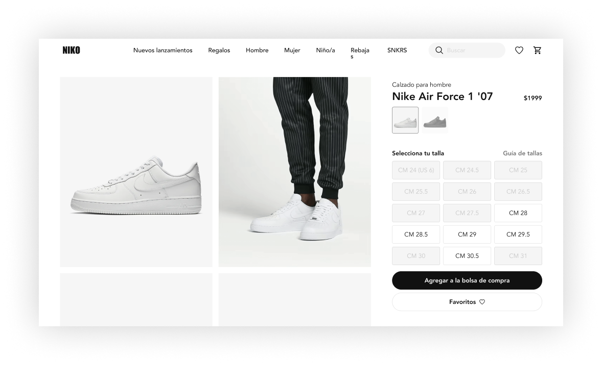
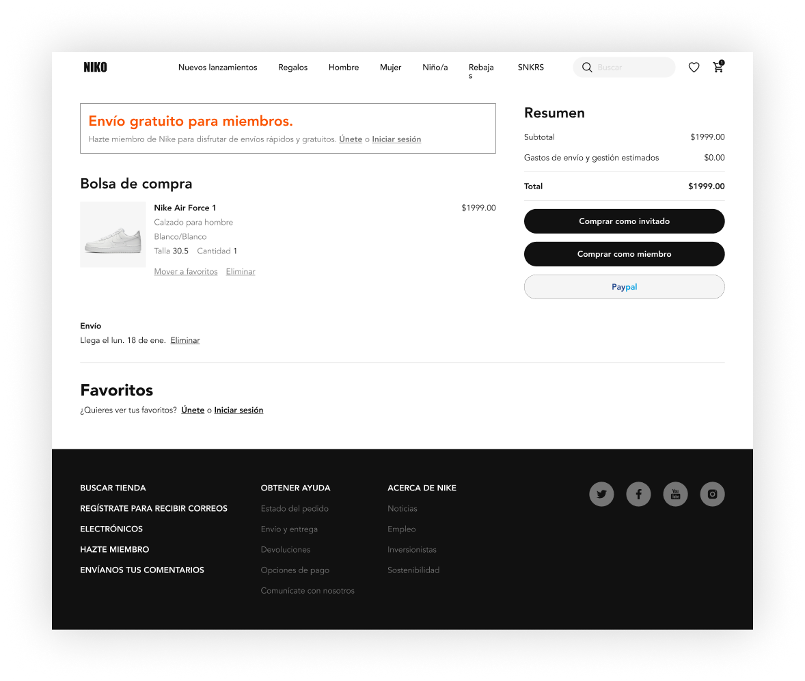

Chandler Bing
Encuentra lo mejor de Niko, con productos nuevos cada semana.
Niko es una de las marcas y proveedores de equipamiento deportivo más reconocidas y valiosas en todo el mundo.
PROYECTO
Sitio web para Niko
MIS CONTRIBUCIONES
Frontend

Este proyecto es dedicado a crear la interfaz de la pagina oficial de Niko, donde tenemos uno de los calzados más emblemáticos en la historia de los sneakers, AIR FORCE 1. Conoce cada uno de los componentes y dale vida a tu página. ¡Just do it!
